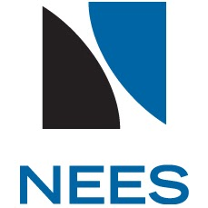

Legacy
Databases
Complete list of Legacy datasets originally uploaded to NEESHub

Note
Most datacenterhub databases were originally uploaded to NEESHub and are now maintained here and at Design Safe.
Databases crated on NEESHub using "DataSTORE" are preserved here as they may not be available at Design Safe CI.
NEESHub databases related to work at Purdue University are also preserved here for redundancy.
View the complete list of NEES datasets that were published through NEEShub and later maintained (until 2023) by datacenterhub
Legacy Databases (Developed on DataSTORE)
- 53 UCSB Field Sites Waveform Data (Magnitude 5.5 or larger events) DOI:10.4231/D3XP6V349
- 252 A Database for Seismic Retrofit Construction Cost of Concrete and Steel Framed Schools in Iran DOI: 10.4231/D3959C774
- 254 ACI 369 Circular Column Database DOI: 10.4231/D39Z90B9T
- 255 ACI 369 Rectangular Column Database DOI: 10.4231/D36688J50
- 256 ACI 445 Punching Shear Collected Databank DOI: 10.4231/D3TX35618
- 257 Database for Structural Control and Monitoring Benchmark Problems DOI: 10.4231/D3Q52FC7T
- 258 Earthquake Simulator Video Archive DOI: 10.17603/DS2TH4G
- 259 Performance Database for Reinforced Concrete Columns with Spiral Reinforcement DOI: 10.4231/D32F7JR0C
- 260 Shear Wall Database DOI: 10.4231/D38C9R416
- 261 The Shear Wave Velocity Profiles Database DOI: 10.4231/D3JH3D27N
- 262 SAC Steel Project Database DOI: 10.4231/D3FQ9Q536
- 263 The Haiti Earthquake Database DOI: 10.4231/D3P843W0H
- 264 Projects Suitable for SHM and Model Updating Research DOI: 10.4231/D3ZW18T26
- 265 The ACI Publications Database DOI: 10.4231/D3SX64911
- 266 The Journal of Earthquake Engineering Database DOI: 10.4231/D3KH0DZ60
- 268 CENSEIS- Centrifuge and Full-scale Modeling of Seismic Pore Pressures in Sands DOI: 10.4231/D3GF0MX4F
- 269 FLIQ-Foundation and Ground Performance in Liquefaction Experiments DOI: 10.4231/D3M61BQ73
- 270 PRESHAKE-Centrifuge modeling of the effect of seismic preshaking on the liquefaction resistance of sands DOI: 10.4231/D38K74X78
- 271 Priority Index Database-Medellin (Colombia) DOI: 10.17603/DS2PQ14
- 272 The KiK-net database processed using an automated ground motion processing protocol DOI: 10.17603/DS2K081
- 14288 Ottawa F-65 Sand Data from Ana Maria Parra Bastidas DOI: 10.17603/DS2MW2R
- 14316 Leap Soil Properties and Element Test Data DOI: 10.17603/DS2WC7W
- 14312 LEAP Centrifuge Test and Numerical Simulation Specifications DOI: 10.17603/DS2159T
- 14342 Chilean Strong Ground Motion DOI: 10.17603/DS2N30J
- 14307 FoRCy: Rocking Shallow Foundation Performance in Slow Cyclic and Monotonic Experiments DOI: 10.13019/t0cq-qf64
Data Related to Work at Purdue (Available also on Design Safe)
- 267 Behavior of Ten Story Reinforced Concrete Walls Subjected to Earthquake Motions (NEES-2010-0915)
- 271 Earthquake-Simulation Tests of a Ten-Story RC Frame with a Discontinued First-Level Beam (NEES-2011-1061)
- 278 Shear Strength Decay in Reinforced Concrete Columns Subjected to Large Deflection Reversals (NEES-2010-0905)
- 281 Experimental Modelling and Analysis of Three One-Tenth-Scale Reinforced Concrete Frame-Wall Structure (NEES-2011-1053)
- 285 Experiments to Study the Earthquake Response of Reinforced Concrete Frames with Setbacks (NEES-2011-1068)
- 290 Response of Ten Story, Reinforced Concrete Model Frames to Simulated Earthquakes (NEES-2011-1072)
- 298 Experiments to Study Earthquake Response of R/C Structures with Stiffness Interruptions (NEES-2011-1058)
- 299 Experimental Study of Frame-Wall Interaction in RC Structures Subjected to Strong Earthquake Motions (NEES-2011-1019)
- 350 Experiments to Study Seismic Drift of Reinforced Concrete Structures (NEES-2011-1065)
- 353 Experimental Investigation of a Full-Scale Flat-Plate RC Structure Subjected to Cyclic Lateral Loading (NEES-2008-0625)
- 359 Small-Amplitude Vibration Tests of a Full-Scale Reinforced Concrete Flat-Plate Structure (NEES-2014-1247)
- 383 NSF RAPID: Collection of Damage Data Following Haiti Earthquake (NEES-2010-0872)
- 387 The Effect of Scale on the Resistance of Reinforced Concrete Beams to Shear (NEES-2012-1169)
- 427 An Experimental and Analytical Study of the Earthquake Response of R/C Frames with Yielding Columns (NEES-2011-1063)
- 452 Seismic Response of Structural Walls with Geometric and Reinforcement Discontinuities (NEES-2011-1050)
- 456 Seismic Performance of 5 RC Buildings w Structural Walls at Tohoku Univ. during the Tohoku EQ of 2011 (NEES-2012-1122)
- 477 Experiments and Analyses to Study the Seismic Response of RC Frame-Wall Structures with Yielding Columns(NEES-2011-1057)
- 505 Reinforced Concrete Columns Reinforced with High-Strength Steel
- 516 Reinforced Concrete Columns Reinforced with High-Strength Steel (NEES-2010-0904)
- 538 Mitigation of Collapse Risk in Vulnerable Concrete Buildings (NEES-2008-0637)